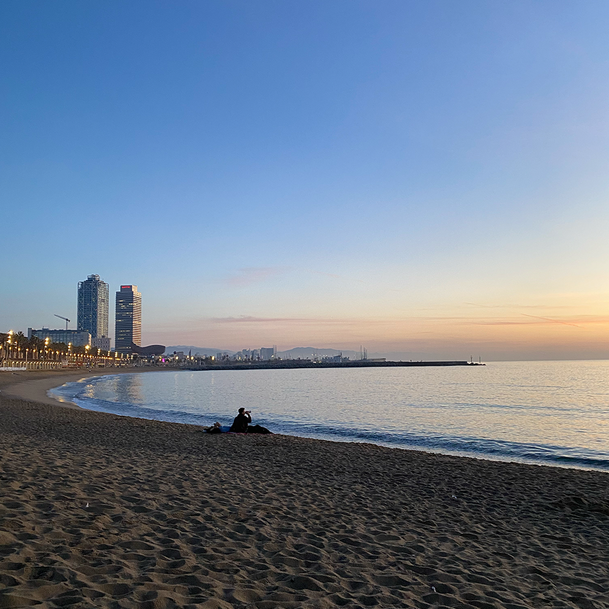
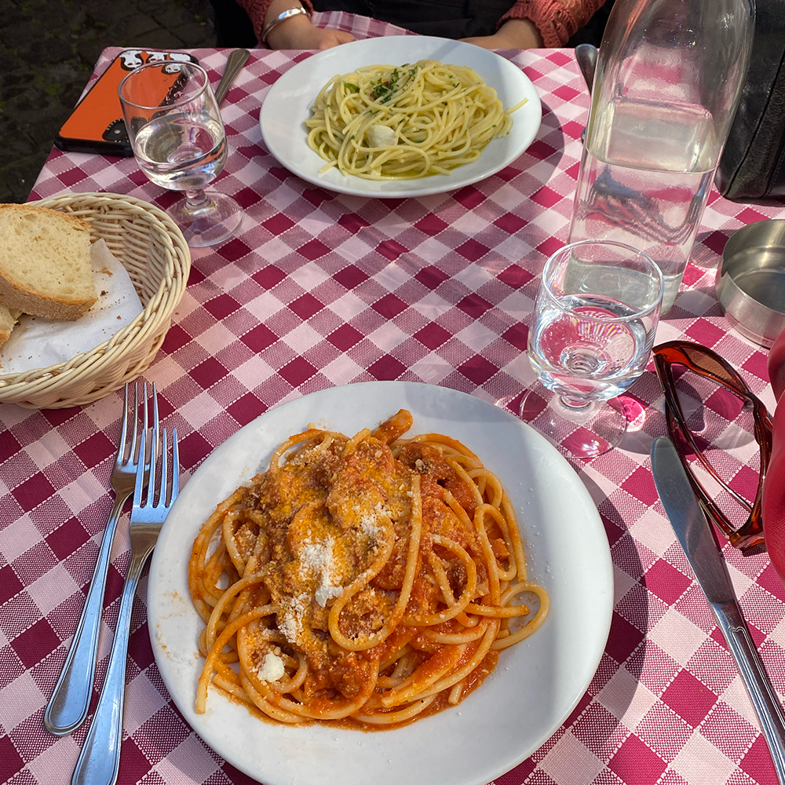
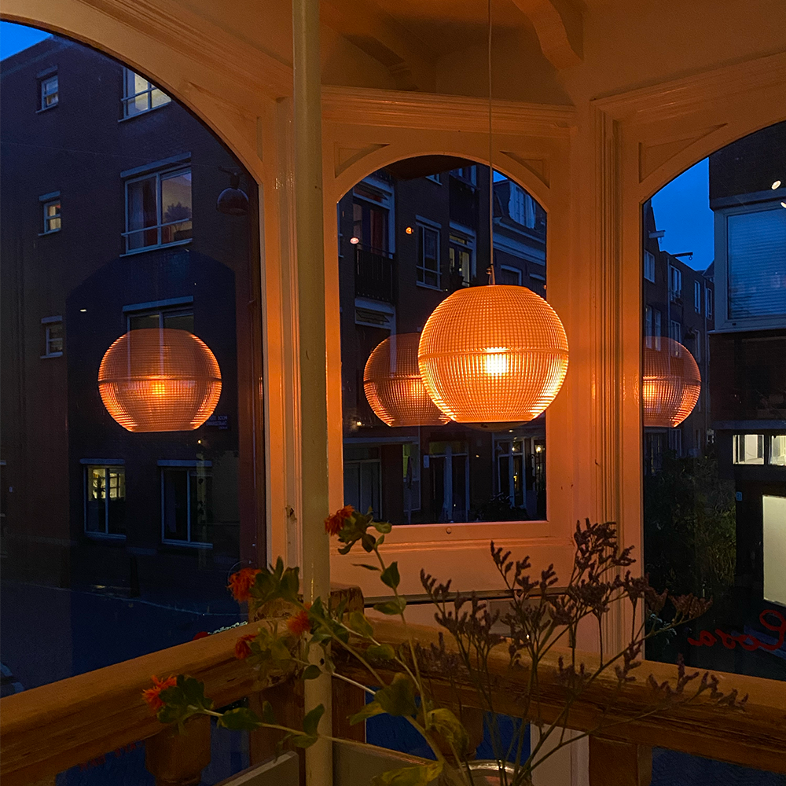
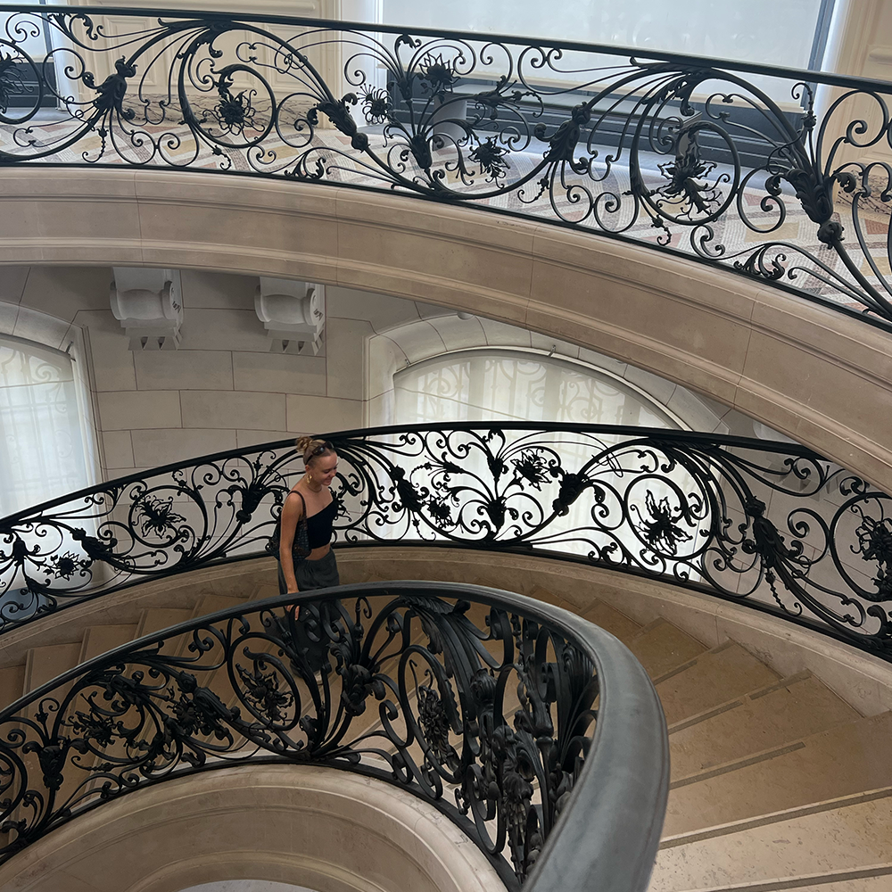

Barcelona

De perfecte plek voor een stad-strand combinatie. Het strand ligt gelegen aan de stad en is makkelijk te bereiken. Naast het strand heeft
de stad nog veel meer te bieden: vele parken, musea en natuurlijk het authentieke centrum: Gothic Quarter. Neem ook zeker een kijkje bij de werken van
Antoni Gaudi, dit is de architect waar de stad bekend om staat.
Rome

Rome, de stad die overstroomt aan historische bezienswaardigheden. Op elke hoek van de straat kom je wel een mooi oud gebouw tegen. De stad zit vol
kerken, musea, pleinen, klasieke monumenten, gezellige restaurants en vergeet Vaticaan-stad niet. Naast alle historie die te vinden is in de stad heeft
Rome ook leuke uitgaansgelegenheden en talloze bars, cafés, en restaurants. Je kunt hier dus gegarandeerd goed eten en dansen.
Amsterdam

De mutli culturele stad van het land. De oude binnenstad staat bekend om haar grachtengordel vol authentieke gebouwen. In de stad
is veel te doen en te beleven. Er zijn vele musea, voorstellingen, parken en poppodia. De stad omarmt nieuwe initiatieven en is constant
opzoek naar vernieuwing. Denk je aan Amsterdam, denk je aan cultuur, geschiedenis, inclusiviteit en creativiteit.
Parijs

Als je inspiratie op wil doen in de mode is parijs de place to be. Alle grote mode bedrijven zitten daar gevestigd, maar ook op straat is talloze
inspiratie te vinden. De wijken le Marais en Montmartre zijn het creatieve centrum van de stad. Het barst hier vol van de boutiques, bars en restaurants.
Wil je je terugtrekken uit al die drukte dan zijn de tuilerien en parc luxembourgh een echte aanrader.